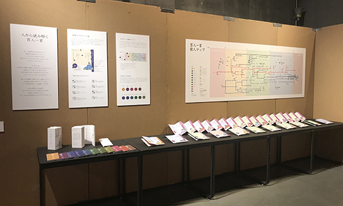
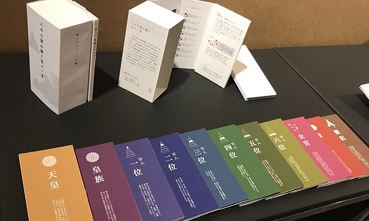

Goods
紙面、アナログでも楽しめる「人から読み解く百人一首」
このサイトは百人一首の実像を広くお伝えしたいがため、WEBというメディアを利用して作られたものですが、もともとDTP,紙面を元に構想が練られていました。マップとプロフィールをそれぞれの読み物として一つの商品として販売しています。
なお、展示用のボードも用意しているため、もし機会がありましたらご活用ください。
※個人で作っているため、お問い合わせからお時間をいただくこと、ご了承ください。
- 
- 
参考文献・出典
このメディア・サイトを制作するにあたり参考にさせていただいた書籍、やURLを掲載いたします。
詳しい内容やおすすめポイントはブログでもご紹介する予定です。
制作のきっかけや細かいデザインのアイデアだしの際には本当にお世話になりました、ありがとうございます。
- 板野裕之「眠れないほど面白い百人一首」三笠書房
- 谷知子「百人一首解剖図鑑」エクスナレッジ
- 監修佐佐木幸綱「百人一首のひみつ 100」(株)主婦と生活社
- 橋本治「百人一首がよくわかる」講談社
- 目崎徳衛「百人一首の作者たち」角川文庫ソフィア
- 関幸彦「百人一首の歴史学」NHK ブックス
- 「新国語総合ガイド三訂版」京都書房
- 堀田善衛「定家明月記私抄」ちくま学芸文庫
- 監修山本博文「角川まんが学習シリーズ第4巻日本の歴史~武士の目覚め編~」
- Wikipedia 百人一首 / 歴代天皇 / 平安時代